1994 · GRAUBÜNDEN
Der Anfang auf eigenen Wegen.
Touren und Hochtouren seit der Jugend. Berge, Natur und die Neugier auf ferne Länder werden zum roten Faden.
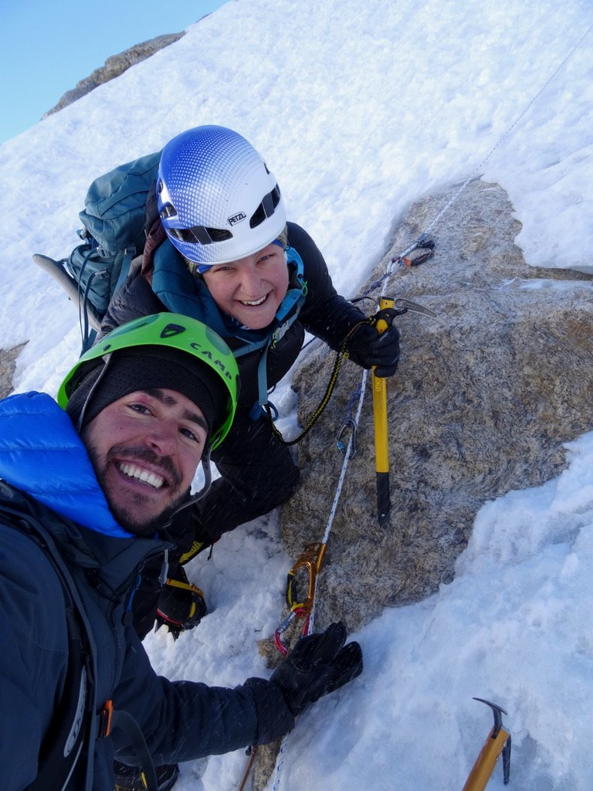
1994
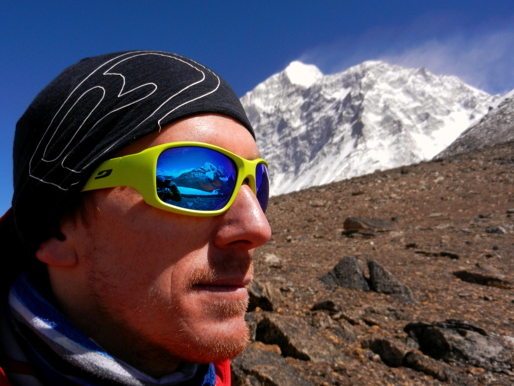
EXPEDITIONEN · TREKKING · BEGEGNUNGEN
Seit 1994 in den Bergen. Seit 2012 als karitativer Verein in Nepal und anderen Ländern der Welt unterwegs.
DAS TAGEBUCH ÖFFNEN ↓1994 · GRAUBÜNDEN
Touren und Hochtouren seit der Jugend. Berge, Natur und die Neugier auf ferne Länder werden zum roten Faden.

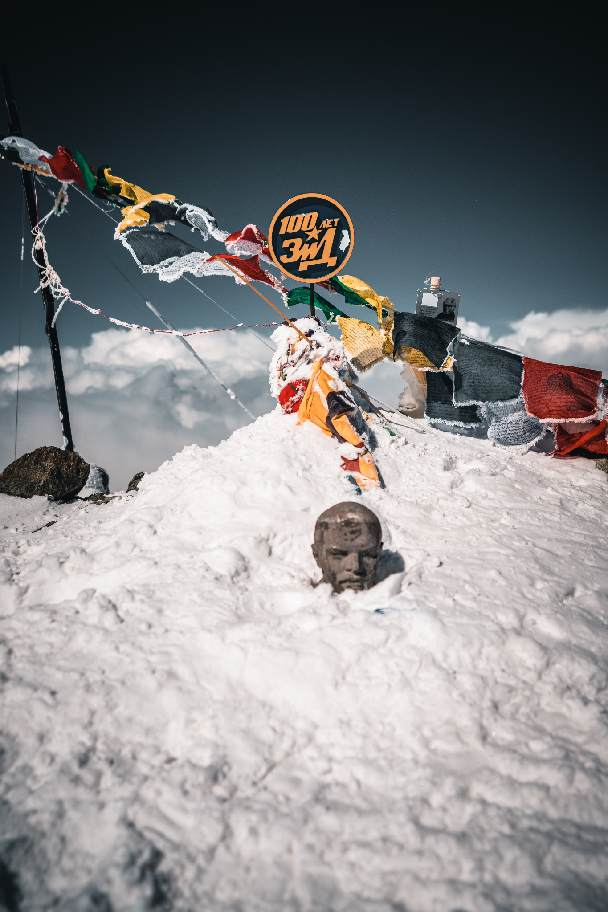
2012 · NEPAL
Tour mit Ngima Grimen Sherpa (selig) zum Singu Chuli, 6501 m. Aus einer Reise wächst etwas Dauerhaftes: Höhenbergsteigen als karitativer Verein.
Singu Chuli
6501 m
Nepal
2012 / 2014 / 2015 · KAUKASUS
2012 Elbrus. 2014 über die Nordseite. 2015 erneut zurück.
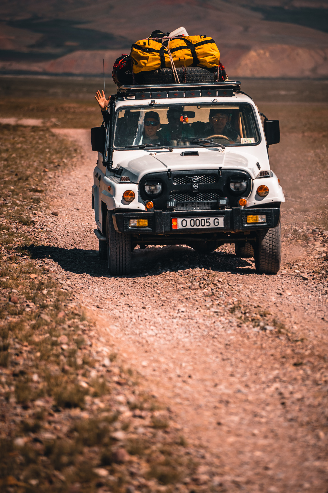
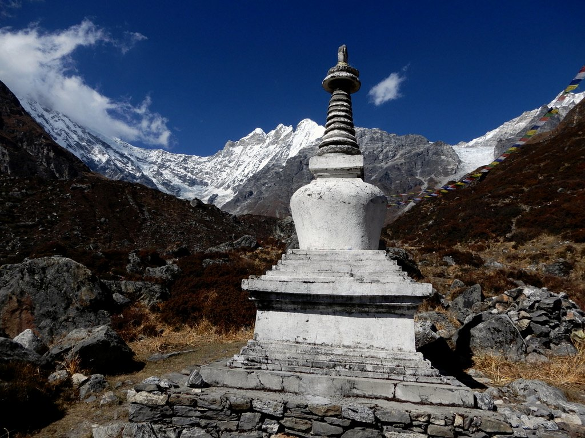
2013 & 2017 · NEPAL
2013 Erstbesteigungsversuch am Yaupa (6422 m). 2017 die Rückkehr: derselbe Berg, neue Erfahrung, neue Geschichte.
2014 · NANGAMARI I
Offizielle Erstbesteigung des Nangamari I (6547 m) durch Remo D., David B. und Hira Gurung. Geplant und durchgeführt durch uns.
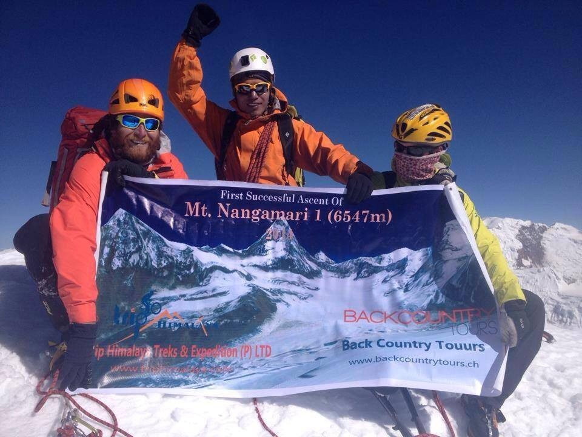
First ascent2016 · MUSTANG
Weltrekordversuch Bike: längster Downhill in Mustang, Nepal. Geplant – letztlich nicht durchgeführt. Auch das gehört ins Tagebuch.
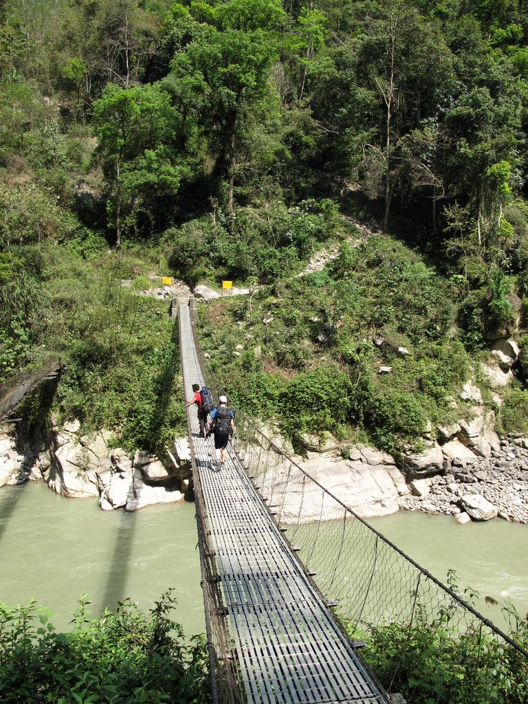
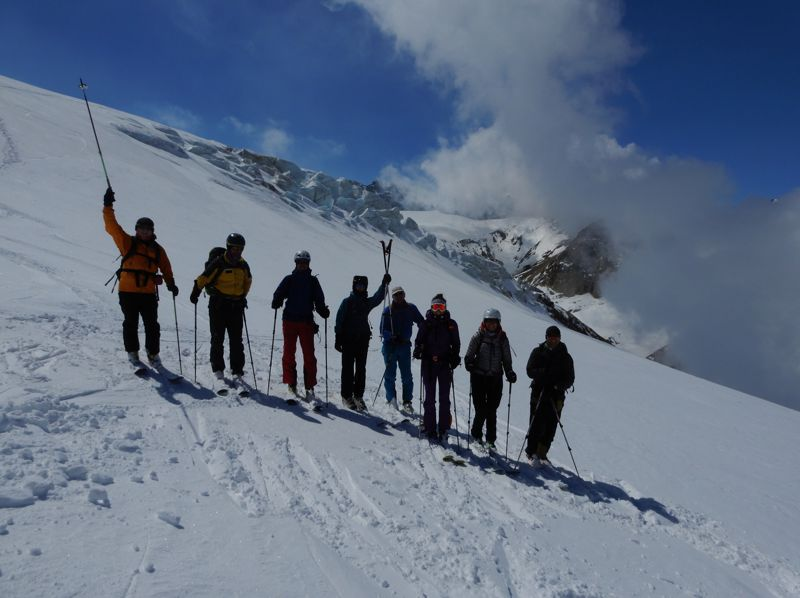
HERBST 2018 / 2019 · NEPAL
2018 Langtang. 2019 erneut Langtang und weiter in den Chitwan Nationalpark. Berge und Begegnungen gehören für uns zusammen.
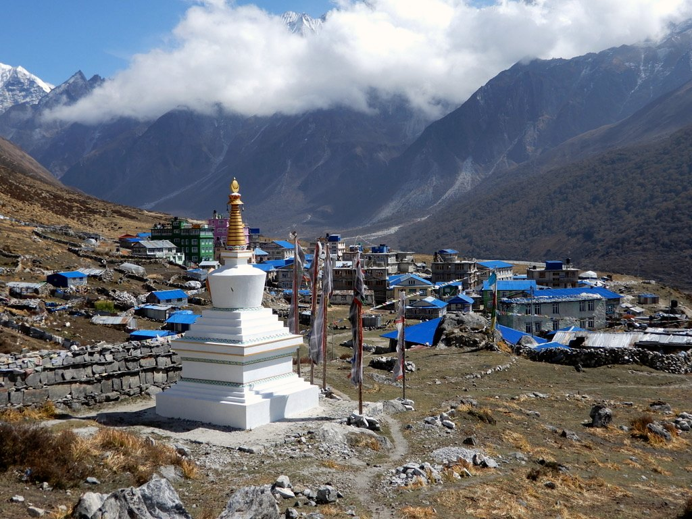
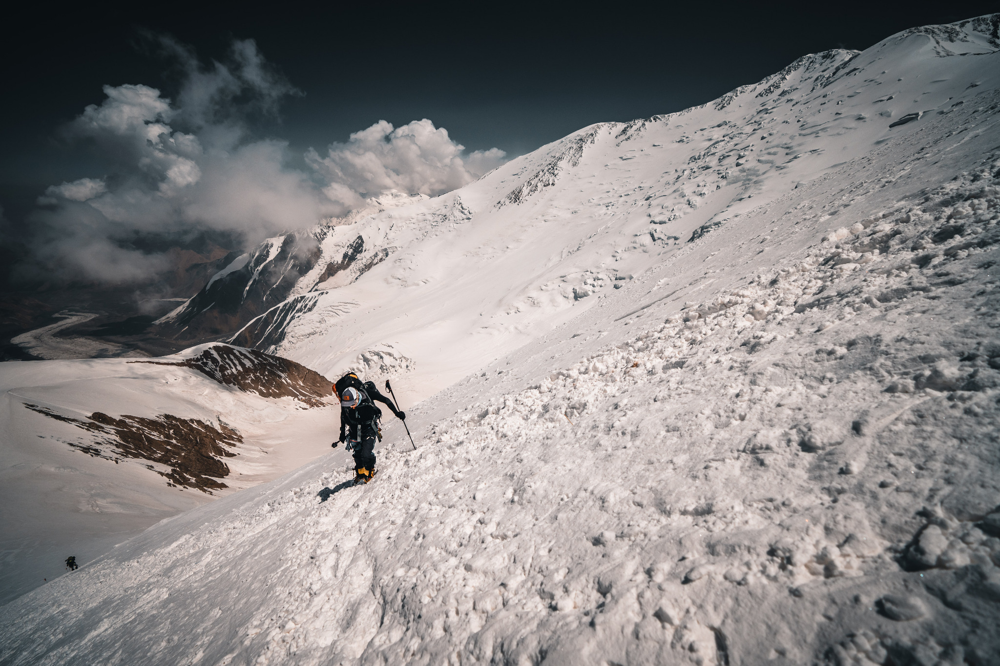
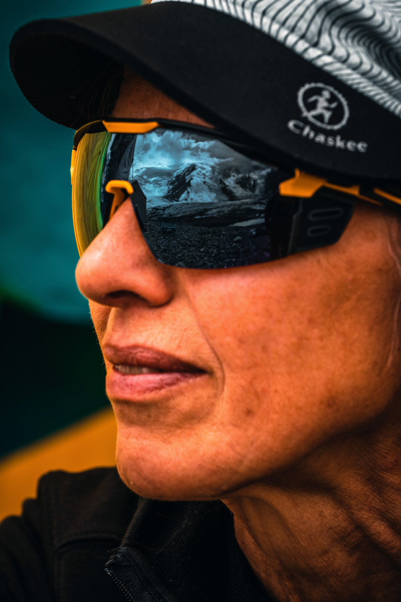
Gasherbrum I2020 · PAKISTAN
Gasherbrum I, 8080 m. Grosse Berge bedeuten Teamgeist, Respekt und Demut.
2023 · KIRGISTAN
Expedition zum Pik Lenin. Grosse Höhe, anspruchsvolle Bedingungen und ein intensives Teamerlebnis.
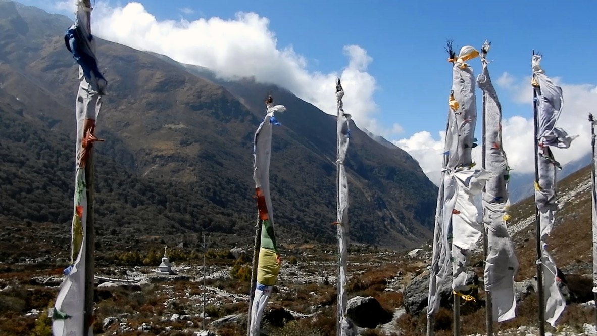
2024 · NEPAL
Wieder Nepal. Wieder unterwegs. Nicht um Gipfel zu sammeln, sondern um Landschaften, Menschen und Geschichten zu erleben.
„Irgendwann hört man auf, Gast zu sein.“
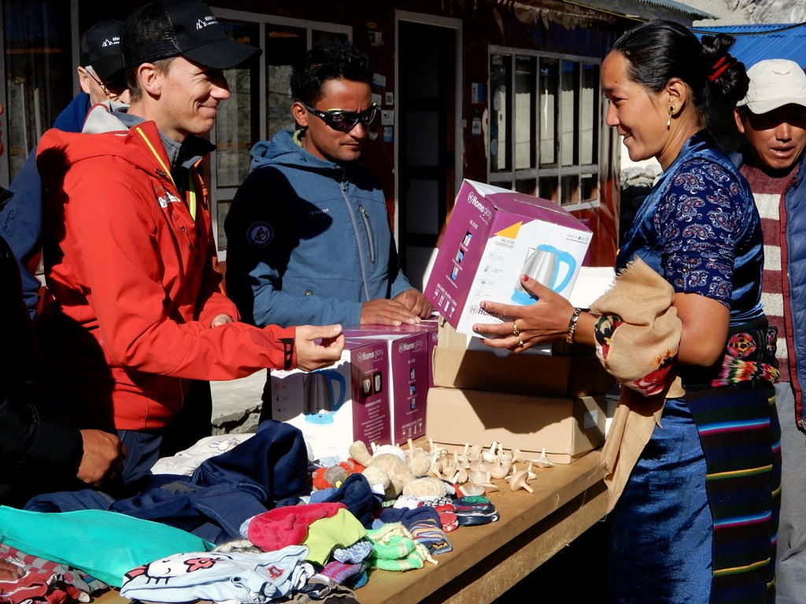
Genau darum
geht es.
MENSCHEN & PROJEKTE
Höhenbergsteigen verbindet Reisen mit konkreter Unterstützung vor Ort. Beziehungen, die über eine Expedition hinausgehen.
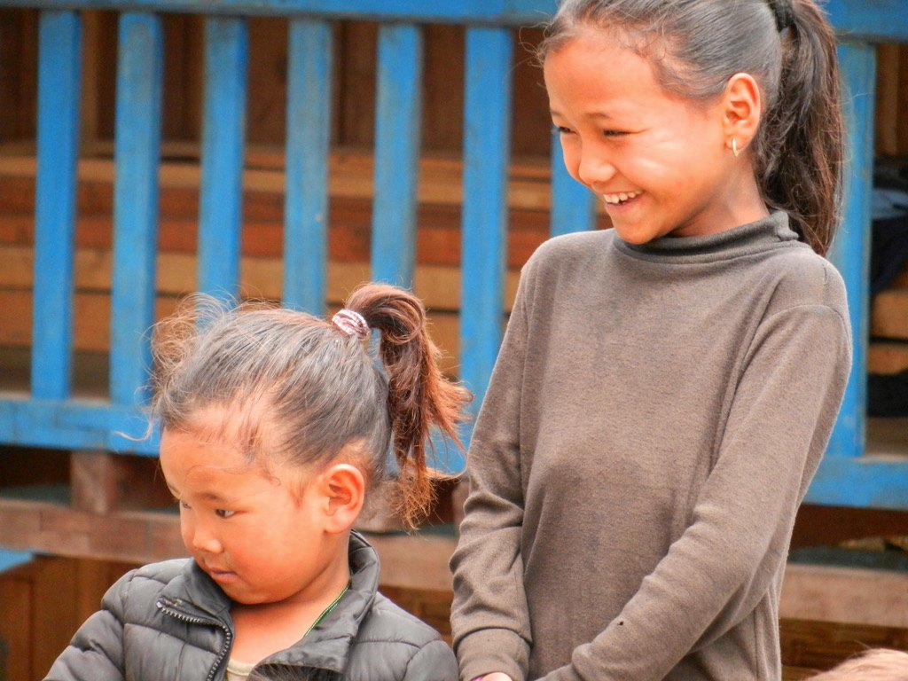
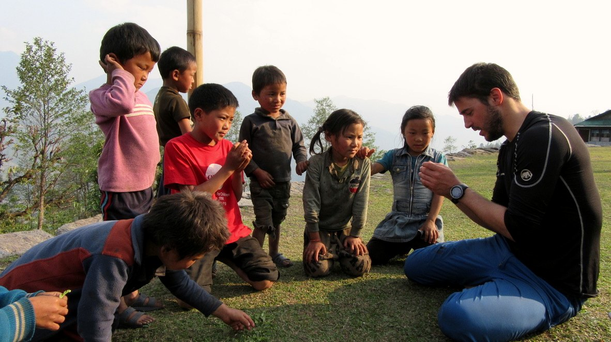